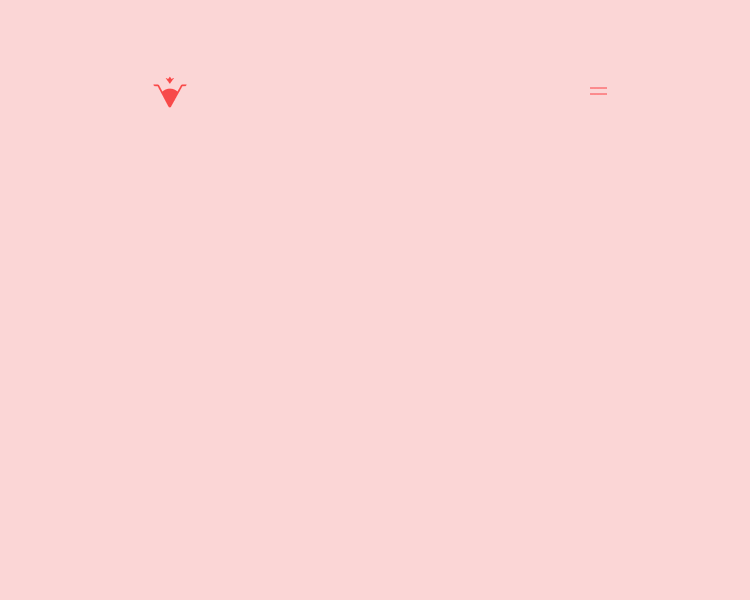
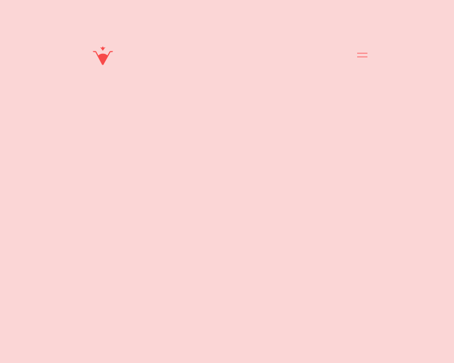

Vegier — Branding & Package
Vegier is a brand of vegetable smoothies made fresh everyday using organic ingredients. The design inspiration came from the natural way how vegetables grow. The design on each bottle reflects the texture and color that are varied in flavors, and the style gives a playful, organic, and energetic feeling to the brand. The brand design communicates luxury and quality through the look but keeps it approachable with the minimal and colourful package.
Brand Identity / Package Bottle / Photoshop / Indesign / Illustrator / After Effect / Sketch / Fusion 360
 
